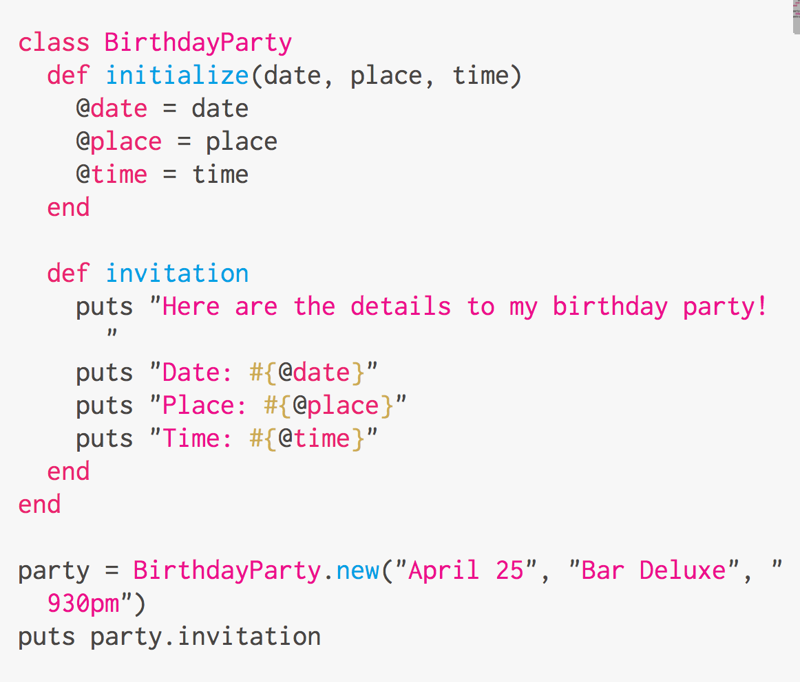

Variable Scope
Constants, Global, Class, Instance and Local
April 26, 2015

This gif is explained below
Tangent(I regret nothing)
This week I turned 34. My birthday was on a Friday, and though I had only initially planned to go out to dinner with my younger brothers who are in town, I ended up doing much more celebrating than that. I ended up going out for drinks with my engineering team lead and a few other dev's I work with. I also went out to see a live band play on Sat night. Inbetween were scrambling to learn concepts in Object-Oriented programming, class structure, variable scope, refactoring and a slew of other things I felt I needed another 20 hours to dive further into. Studying hung over was also quite challenging, nonetheless I made it through another year's mark in once piece so...I regret nothing. :)
Variable Scope
In Ruby, there are a few different types of variables:
- CONSTANT
- $global
- @@class
- @instance
- local
CONSTANT
A CONSTANT variable is denoted in all caps. It usually holds data that won't ever change. Apparently in other languages once you create a constant, the language won't let you change what's in it. In Ruby, it will allow you to change things inside a constant, but you will get a warning about it when running the program.If you try to change a constant, you might get a warning like this.
# age.rb
CONSTANT = "34"
CONSTANT = "24"
age.rb:3: warning: already initialized constant A_CONST
In one of the coding challenges we had this week, a bunch of information about a State and it's population, population density and such were stored in a constant variable. This is because we assume that those numbers won't change throughout the duration of the program. In my trivial example above, I might store my age, which is not something that will change at least for another year, so I might store it in a constant while I write a program about myself this year.
$global
A global variable is denoted using the $ sign. A global variable can be accessed from anywhere in the program during runtime.
Global variables are not used very often in Ruby since, as it suggests, uring a global variable has global implications. Unless you are writing really small scripts where it is clear where and how a global variable might affect the program, it is best to stay away from them.
@@class
I talked a little about this in my previous post, but class methods are created using @@ signs in front of it. Class variables are shared between all instances of a class, as well as descendants of a class. An example might be:
class LastYear
@@age = 33
def self.print_age
@@age
end
end
puts LastYear.print_age # => 33
class ThisYear < Last Year
@@age = 34
end
puts LastYear.print_age # => 34
puts ThisYear.print_age # => 34
@Instance
An instance variable is denoted using one @ sign, and is a variable which can be accessed anywhere inside a class or an instance of a class. Here is an example of how an instance variable is defined in the "initialize" method, then accessed in the "invitation" method.

The output will look like this:

local
Local variables are variables that are only available to a method or an object, and not from any other methods or outside of a class. It is simply denoted with a string, then an equal sign, then the value assigned to it.
birthday = "fun"
Conclusion
There is still much more to variable scope than what I've discussed here, but I think what makes Ruby an amazing language is that you have the ability to share variables between classes, methods and objects with very clear and simple markup. I'm really excited that I know the difference now, and I guess I'm that much smarter than I was last year. ;)